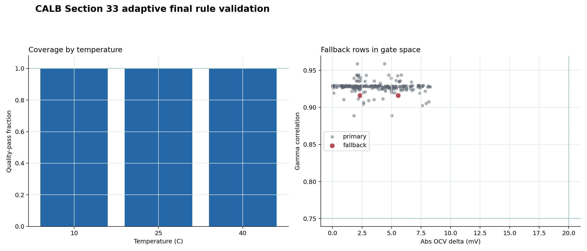
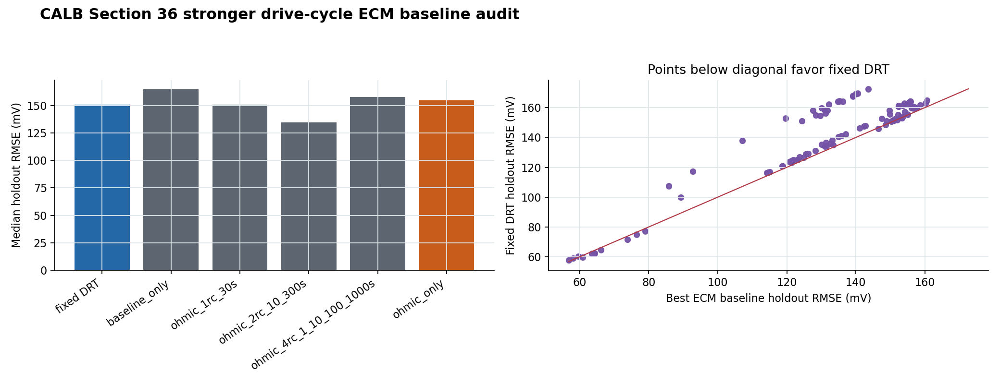
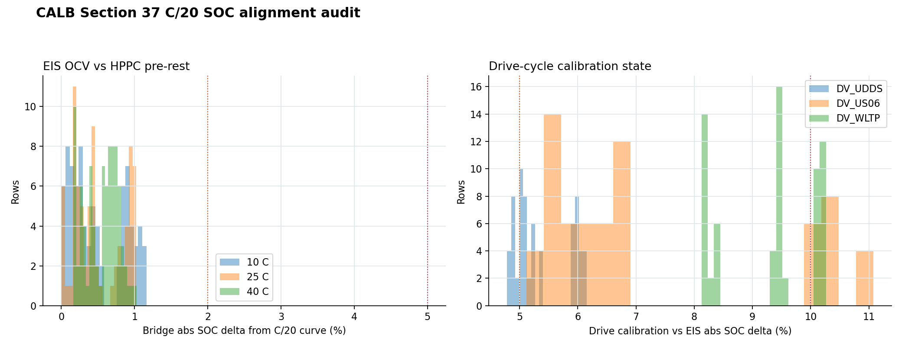

Internal CALB bridge
246 / 246
frozen pulse-to-EIS rule quality-pass rows across 10, 25, and 40 C. Median bridge correlation is 0.928, median OCV delta is about 3.3 mV, and median time fit RMSE is about 3.1 mV.
This is the meeting version of the project. The honest story is not "the method is validated." The honest story is stronger: we built the pipeline, found a strong internal pulse-to-EIS bridge, then stress-tested the claim until the weak parts were visible.
We started with a rough idea: estimate DRT-like relaxation behavior from time-domain current and voltage data, then compare it with EIS-derived DRT. The early broad 2D comparisons were weak. Voltage fits could look decent while the gamma-shape agreement stayed poor. That was a warning sign.
The useful turn came when the work narrowed from broad "time-series DRT works" claims to a stricter pulse-to-EIS bridge on matched CALB HPPC and EIS records. The final frozen pulse-to-EIS rule adaptive tau-constrained rule passes all internal CALB rows across 10, 25, and 40 C. That is the strongest result.
The weak spot is transfer. Drive-cycle transfer does not beat a stronger ECM baseline, and the external dataset checks do not yet validate the frozen CALB rule. So the meeting line is simple: internal bridge evidence is strong, external validation is not solved, and the next decision is what evidence standard the professor wants before this becomes write-up material.
frozen pulse-to-EIS rule quality-pass rows across 10, 25, and 40 C. Median bridge correlation is 0.928, median OCV delta is about 3.3 mV, and median time fit RMSE is about 3.1 mV.
Fixed DRT wins against the stronger drive-cycle ECM baseline check ECM baseline on only 0.121 of drive-cycle rows. drive-cycle transfer test looked better, but drive-cycle ECM baseline check is the harder and fairer test.
CALCE is blocked, RADAR4KIT returns no support, and Panasonic returns no support. Do not call this externally validated.
The CALB package now parses the dataset, screens protocols, finds HPPC pulse/rest windows, fits a time-domain relaxation model, computes EIS-derived comparison targets, and writes section-by-section plots, CSVs, JSON summaries, and reports.
The point is traceability. A meeting reviewer can open a plot, then open the matching rows and summary file. That matters because vague plots are cheap. Reproducible evidence is not.
The narrow claim is that matched CALB pulse windows can reproduce an EIS-aligned relaxation signature under the final frozen pulse-to-EIS rule. The broad claim, that this transfers cleanly to drive cycles or external datasets, is not supported yet.
This distinction is the whole project right now. If you blur it, the work sounds better for ten seconds and then collapses under questions.
| Stage | What happened | What it taught us |
|---|---|---|
| Early HPPC and EIS runs | The files loaded and the first pulse/EIS comparisons could be generated. | The pipeline was technically viable, but early gamma-shape agreement was weak. |
| Broad 2D comparisons | Multi-cell and multi-temperature 2D surfaces ran, but median correlations were near zero or negative. | Good OCV matching and good voltage reconstruction are not enough. The DRT shape has to agree too. |
| Tau-constrained bridge | Constraining the time and EIS comparison to a defensible tau window produced the first strong bridge result. | The useful problem is narrower than the original ambition. Narrow is fine if it is true. |
| Final adaptive frozen pulse-to-EIS rule | The final rule passes all 246 internal CALB rows, with only 2 fallback rows. | This is the current best internal result and the one worth showing first. |
| Drive-cycle and external checks | Drive-cycle transfer loses to a stronger ECM baseline. External adapter checks do not validate the rule. | The honest next step is validation design, not more internal polish. |



The external work is dataset qualification plus frozen-rule adapter testing. The important guardrail is that the frozen pulse-to-EIS rule should not be tuned after looking at external data. If we tune on the validation dataset, the result becomes self-deception with nicer plots.
Verdict: blocked/inconclusive
CALCE has 24 same-join rows using frozen join keys, but 0 rows are runnable by frozen pulse-to-EIS rule in the current inputs. The missing piece is HPPC-compatible pulse windows tied to the same cell, temperature, storage period, and SOC evidence.
Verdict: no support
The corrected EIS addendum makes the adapter run possible. The run produces 456 frozen-rule rows and 411 quality-pass rows, but it does not beat the voltage-only baseline. That is useful negative evidence.
Verdict: no support
Panasonic is a smoke-test adapter case. It produced 33 frozen-rule rows and 0 quality-pass rows. It should not be sold as validation or aging support.
| Topic | Allowed claim | Do not claim |
|---|---|---|
| CALB internal bridge | The frozen pulse-to-EIS rule adaptive tau-constrained rule passes the internal CALB pulse-to-EIS bridge gate across the processed 10, 25, and 40 C grid. | That this proves external validity, SOH prediction, or aging prediction. |
| Drive cycles | Drive-cycle transfer was tested and then downgraded after the stronger ECM baseline audit. | That drive-cycle transfer test proves drive-cycle superiority. drive-cycle ECM baseline check says it does not. |
| CALCE | CALCE Storage 25 C has 24 same-join rows, but 0 frozen pulse-to-EIS rule-runnable rows in current inputs. | That CALCE validates the frozen rule. |
| RADAR4KIT | The corrected EIS addendum is locally usable, but the frozen adapter run gives no support because it fails to beat the voltage-only baseline. |
That RADAR4KIT currently validates the frozen CALB rule. |
| Panasonic | Panasonic is a smoke-test adapter run, not support for the claim. | That it is aging validation or a successful external replication. |
"The strongest result is the internal CALB pulse-to-EIS bridge. The final frozen pulse-to-EIS rule passes 246 of 246 rows across all three temperatures. But I am not claiming external validation yet. The drive-cycle and external checks are exactly where the claim gets weaker."
"The next decision is not whether we can make another plot. It is what validation standard we want: which dataset, which baseline, and which claim boundary."
"The method is validated." It is not.
"This predicts SOH." It does not, at least not from the current CALB evidence.
"Drive-cycle transfer works." drive-cycle ECM baseline check says the stronger ECM baseline beats fixed DRT on most rows.
| If they ask | Answer |
|---|---|
| What is the actual contribution? | A reproducible CALB pipeline plus a strong internal pulse-to-EIS bridge result, with explicit failure audits instead of vague success claims. |
| Why not claim validation? | Because external datasets have not passed the frozen rule. CALCE is blocked, RADAR4KIT gives no support, and Panasonic gives no support. |
| Why did the drive-cycle result weaken? | The fixed DRT method looked good against a weaker baseline, but it loses to a stronger ECM baseline. SOC alignment is also much worse in drive-cycle rows. |
| What do you need next? | A defensible external dataset with same-cell EIS plus pulse/rest evidence, a declared baseline, and permission to keep the frozen pulse-to-EIS rule frozen. |
Viability presentation Dataset validation brief External dataset checks CALB data explorer